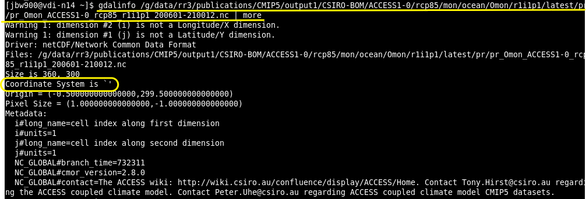
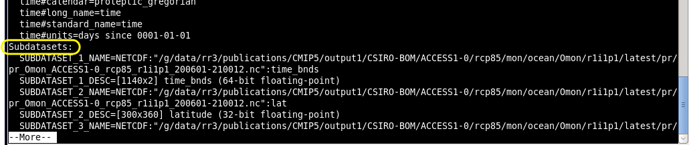
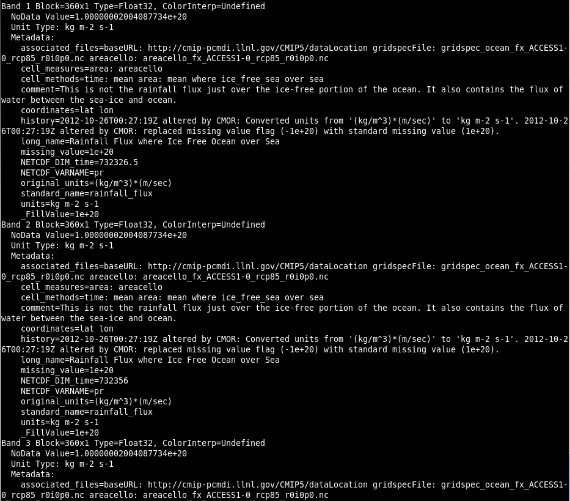

Using the GDAL library with NetCDF files¶
Version: 2.2.2
In this notebook:
How to use GDAL to view file contents and metadata information.
The following material uses Coupled Model Intercomparison Project (CMIP5) collections. The CMIP5 terms of use are found here. For more information on the collection, please click here.
GDAL stands for “Geospatial Data Abstraction Library”. “GDAL is a collection of software that helps with the translation of data from different file formats, data types, and map projections. It’s used in free software like QGIS and GRASS, and even some commercial applications like ESRI ArcGIS and Avenza Geographic Imager/MAPublisher.”
Load the GDAL library
$ module load gdal/2.2.2-nopy
NOTE: GDAL supports about 100 raster formats. - ArcInfo grids, ArcSDE raster, Imagine, Idrisi, ENVI, GRASS, GeoTIFF - HDF4, HDF5 - USGS DOQ, USGS DEM - ECW, MrSID - TIFF, JPEG, JPEG2000, PNG, GIF, BMP
See http://www.gdal.org/formats_list.html
The gdalinfo command
To see what formats are compiled into your version of GDAL, use this command
$ gdalinfo --formats
To view information on file contents, use gdalinfo followed by the file path
$ gdalinfo <file>
E.g.,
$ /g/data/rr3/publications/CMIP5/output1/CSIRO-BOM/ACCESS1-0/rcp85/mon/ocean/Omon/r1i1p1/latest/pr/pr_Omon_ACCESS1-0_rcp85_r1i1p1_200601-210012.nc
This will display the top-level (or global) metadata for the file along with the subdatasets and coordinate reference system information.
Read and display subdataset metadata contents


Note: For netCDF and HDF files, this will typically be empty until selecting a subdataset (example below).
To read the subdataset contents (in this case one of the netCDF variables):
$ gdalinfo <file> | grep SUBDATASET
$ gdalinfo NETCDF:<file>:<subdataset>
This will display the metadata of that subdataset or variable and the coordinate reference system (CRS) information (if included).
For example:
$ gdalinfo NETCDF:/g/data/rr3/publications/CMIP5/output1/CSIRO-BOM/ACCESS1-0/rcp85/mon/ocean/Omon/r1i1p1/latest/pr/pr_Omon_ACCESS1-0_rcp85_r1i1p1_200601-210012.nc:pr
Gdalinfo displays the number of bands into this subdataset. There are metadata attached to each band. In this example, the metadata informs us that each band correspond to an array of monthly Rainfall Flux where Ice Free Ocean over Sea from Jan 2006 to Dec 2100. There are 1140 months of data in this subdataset. You may also use gdal_translate for reading the subdataset.

SRS=GEOGCS[“WGS 84”,DATUM[“WGS_1984”,SPHEROID[“WGS 84”,6378137,298.257223563,AUTHORITY[“EPSG”,“7030”]],AUTHORITY[” EPSG“,”6326”]],PRIMEM[“Greenwich”,0,AUTHORITY[“EPSG”,“8901”]],UNIT[“degree”,0.0174532925199433,AUTHORITY[“EPSG”,“912 2”]],AUTHORITY[“EPSG”,“4326”]]
Note: If CRS information is included within the file but not displayed, the GDAL library is not properly understanding the projection information. Projection information needs to be reformatted.
More examples of gdal_translate and gdalwarp are to be added here in the near future.
Note: You might be interested in thisGDAL cheat sheet.